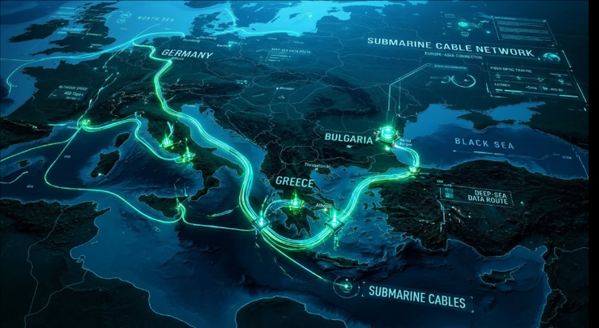

📐 ОФИЦИАЛЕН НАВИГАЦИОНЕН ЧЕРТЕЖ
CEF 20M EUR
AETERNA-SCW EUROPE–ASIA SUBSEA NETWORK
LIVE TELEMETRY MAP
Какво точно подобряваме без строителство на дъното:
Вместо да полагаме нов скъп кабел (€100M+), ние свързваме нашето сухоземно лазерно изчислително ядро (Dry-Plant Laser Interrogator) към вече съществуващите свободни оптични нишки (*Dark Fiber Pairs*) на входа в Поморие и Бургаския залив. Чрез 10 kHz фазов анализ (SOP/DAS) целият подводен кабел се превръща в гигантски 150+ километров акустичен и сеизмичен радар!
Вместо да полагаме нов скъп кабел (€100M+), ние свързваме нашето сухоземно лазерно изчислително ядро (Dry-Plant Laser Interrogator) към вече съществуващите свободни оптични нишки (*Dark Fiber Pairs*) на входа в Поморие и Бургаския залив. Чрез 10 kHz фазов анализ (SOP/DAS) целият подводен кабел се превръща в гигантски 150+ километров акустичен и сеизмичен радар!
● KAFOS (Karadeniz Fiber Optik)
504 km
Маршрут: Истанбул (Турция) ↔ Бургаски залив / Поморие ↔ Варна ↔ Мангалия / Констанца (Румъния).
Роля: Основният оптичен гръбнак на западното Черно море.
Роля: Основният оптичен гръбнак на западното Черно море.
● BSFOCS / Trans-Black Sea Trunk
1,200 km
Маршрут: Варна / Поморие (България) ↔ Поти / Батуми (Грузия) през абисалната черноморска равнина (-2000m).
Роля: Цифровият мост между ЕС и Кавказ/Азия.
Роля: Цифровият мост между ЕС и Кавказ/Азия.
● Българска Брегова Магистрала
280 km
Маршрут: Дуранкулак ↔ Балчик ↔ Варна ↔ Поморие ↔ Бургас ↔ Созопол ↔ Царево ↔ Резово.
Роля: Национален оптичен шелфов пръстен и връзка с държавния възел в София.
Роля: Национален оптичен шелфов пръстен и връзка с държавния възел в София.
★ AETERNA-SCW Точка на надграждане (Поморие)
ТОЧКА НА ВЛИВАНЕ
Локация: 42.5580° N, 27.6180° E (Южна ивица / Бургаски залив).
Функция: Вливане на 10 kHz лазерен фазов сигнал, $O(1)$ Mojo AI детекция и Linux eBPF ядрена защита за 1.02 ms.
Функция: Вливане на 10 kHz лазерен фазов сигнал, $O(1)$ Mojo AI детекция и Linux eBPF ядрена защита за 1.02 ms.